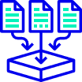
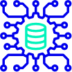

Hello world pale blue do .
que explora el mundo de la programación y la tecnología. Nuevos episodios, todos los jueves cada 15 días.
CONOCÉ MÁSEpisodios

De dónde venimos
Our posturings, our imagined self-importance, the delusion that we have some privileged position in the Universe, are challenged by this point of pale light. Our planet is a lonely speck in the great enveloping cosmic dark. In our obscurity, in all this vastness, there is no hint that help will come from elsewhere to save us from ourselves.
Invitadas/os estelares


Algunos de nuestros temas

Trabajo remoto
Repensando la
programación
Bases del código

Seguridad